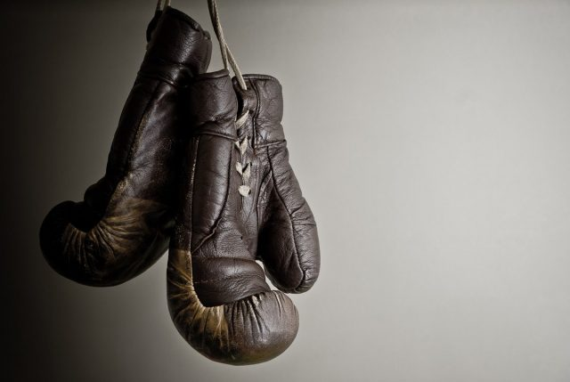
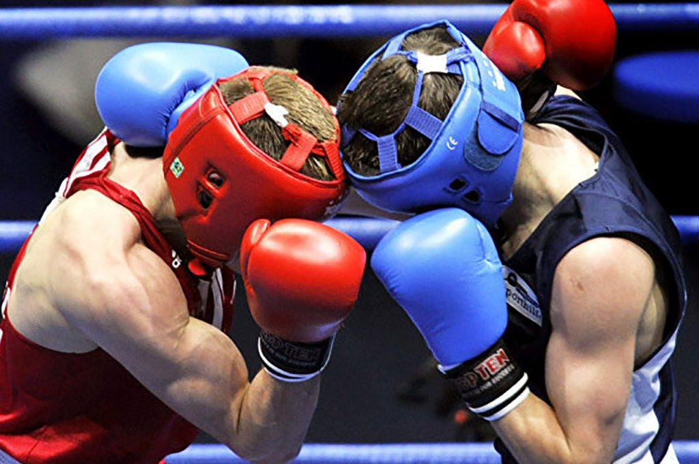
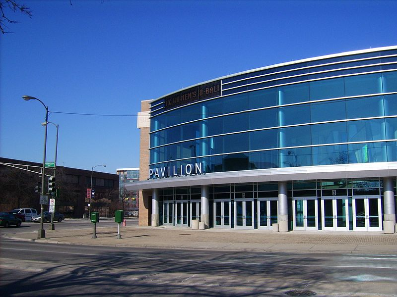
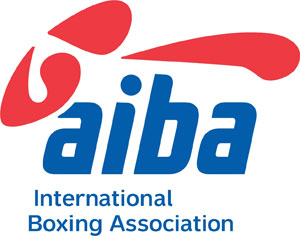
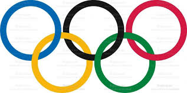
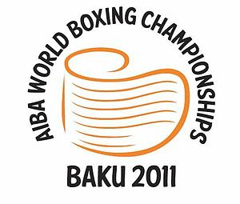
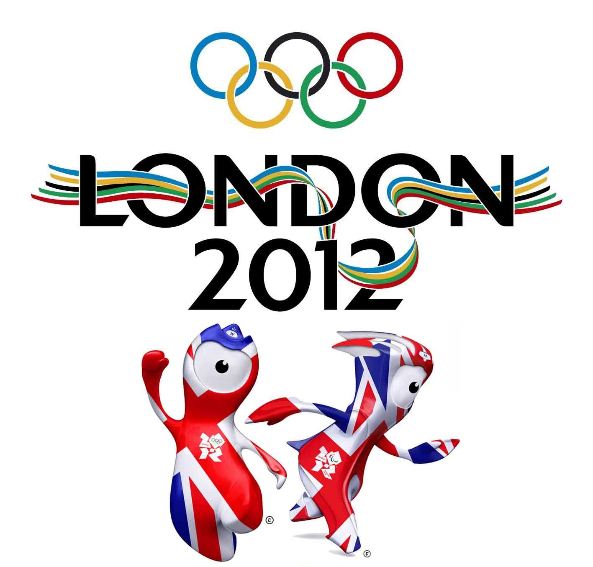

Заниматься боксом Василий начал ещё в детстве.
Первый поединок на любительском ринге Василий провёл в 1994 году в возрасте 6 лет на международном турнире «Надежда». Поединок Василий выиграл, но официально была засчитана ничья, чтоб не расстраивать более взрослого оппонента Василия. Затем прошло множество чемпионатов города, области и страны, во всех из которых Василий выходил победителем.
ервое серьёзное достижение на любительском ринге — в возрасте 16 лет выиграл чемпионат страны. В том же году взял золото на чемпионате Европы среди кадетов (до 16 лет) в весовой категории до 46 кг. Также получил там кубок как лучший боксёр первенства Европы.
В 2005 году выиграл чемпионат Украины среди взрослых в весе 53 кг.

- 1/16 финала Победил Альберто Портундо (Куба) RSCO 3
- 1/8 финала Победил Рахима Нажафова (Азербайджан) RSCO 3
- 1/4 финала Победил Эндрю Селби (Уэльс) RSCO 3
- 1/2 финала Победил Сергея Водопьянова (Россия) 37-17
Финал. Победил Дереника Гижаларяна (Армения) 34-14
В 2006 году Ломаченко отправился в Марокко, где провел 5 боев, 3 из которых закончил досрочно. Стал победителем
первенства мира среди юниоров и в придачу снова получил кубок как лучший боксёр этого турнира.
В 2007 году стал победителем XI международного турнира памяти Семёна Трестина, став обладателем специального приза за победу в категории 57 кг, в которой выступал сам Трестин. В финале
турнира в первом раунде оказался в нокдауне (первом и единственном нокдауне в любительской карьере).
В 2007 году отправился на чемпионат мира:

- 1/32 финала. Победил Абнера Котто (Пуэрто-Рико) 26-9
- 1/16 финала. Победил Теодороса Папазова (Греция) 19-5
- 1/8 финала. Победил Михаила Берданского (Белоруссия) 21-6
- 1/4 финала. Победил Артуро Сантоса Реиса (Мексика) RSCO 3
- 1/2 финала. Победил Ли Яна (КНР) 13-13
- Финал. Проиграл Альберту Селимову (Россия) 11-16
В полуфинале Василий встретился с опытным китайским боксёром Ли Яном. Бой вышел одним из самых сложных в карьере Василия: будучи на грани поражения, на последних секундах он смог вырвать победу. В финале чемпионата мира Василию выпало ещё более тяжёлое испытание. Ему противостоял опытный боксёр из России Альберт Селимов. Ломаченко проигрывал Селимову только в первом раунде, во втором и третьем лидировал, четвёртый раунд проиграл со счётом 2:1, но в совокупности у Ломаченко должно было быть больше очков. Засчитаны они не были, победу присудили Селимову. Василий проиграл свой первый и единственный
поединок на любительском ринге — взял серебро, но всё равно получил лицензию на Олимпийские игры.

Принял участие на чемпионате Европы 2008 года.
- 1/16 финала. Прошёл автоматически
- 1/8 финала. Победил Владимира Никифорова (Эстония) 10-0
- 1/4 финала. Победил Дэвида Оливера Джойса (Ирландия) 10-2
- 1/2 финала. Победил Хишама Зиоути (Франция) 2-1
- Финал. Победил Араика Амбарцумова (Россия) 7-1

Летом 2008 года Василий Ломаченко отправился в Пекин для участия в Олимпийских играх.
- 1/16 финала. Победил Альберта Селимова (Россия) 14-7[7]
- 1/8 финала. Победил Баходиржона Султанова (Узбекистан) 13-1
- 1/4 финала. Победил Ли Яна (Китай) 12-3
- 1/2 финала. Победил Якупа Кылыча (Турция) 10-1
- Финал. Победил Джелькира Кедафи (Франция) 9-1 RSC 1
Был награждён Кубком Вэла Баркера
В первом же поединке судьба снова свела Василия Ломаченко с Альбертом Селимовым. Во втором бою
Василий был активнее и не давал сопернику много шансов. Первый раунд Василий проиграл, но во
втором и третьем нанёс множество точных ударов и сильно разорвал дистанцию в счёте.
В четвёртом раунде Ломаченко почти не наносил ударов, но и не давал возможности атаковать Селимову,
демонстрируя уровень своей защиты. В первом бою на Олимпийских играх Василий взял одну из самых
главных для себя побед.
В четвертьфинале Ломаченко встретился с Ли Яном, которого тяжело побеждал на чемпионате мира. Во втором бою Василий уверенно перебоксировал спортсмена из Китая и расставил все точки над «i» в их противостоянии.
В финале Василий нокаутировал француза Джелькира Кедафи, отправляя его в нокдаун трижды в первом раунде.
По итогам Олимпиады Василий получил кубок Вэла Баркера, который присуждается лучшему боксёру Игр вне зависимости от весовой категории.
- 1/16 Победил Марио Алексиса (Босния и Герцоговина) 16-2
- 1/8 Победил Крейга Эванса (Уэльс) 15-1
- 1/4 Победил Бранимира Станковича (Сербия) 8-2
- 1/2 финала. Победил Оскара Вальдеса (Мексика) 12-1
- Финал. Победил Сергея Водопьянова (Россия) 12-1
В 2010 году по причине травмы бицепса Ломаченко пропускает все главные международные турниры.
Принял участие в президентском чемпионате Казахстана, победил в финале Самата Башенова.

В 2011 году Василий принял участие в чемпионате мира, прошедшем в Баку.
- 1/32 финала. Победил Ламолито Маола (Тонга) RSC 1
- 1/16 финала. Победил Хосе Карлоса Рамиреса (США) 16-9
- 1/8 финала. Победил Робсона Консейсао (Бразилия) 19-18
- 1/4 финала. Победил Фазлиддина Гаибназарова (Узбекистан) 18-10
- 1/2 финала. Победил Доменико Валентино (Италия) 17-11
- Финал. Победил Ясниэля Толедо (Куба) 17-12
На чемпионате мира 2011 года в Баку неожиданно проиграл в 1/8 финала бразильцу Робсону Консейсао со счётом 19/20, однако судейство вызвало массу споров и сомнений, ведь Василий доминировал в бою, а в финальном раунде несколько раз отправлял Робсона в нокдаун, хоть зафиксирован был только один. Было проведено расследование
и зафиксированы судейские ошибки, победу заслуженно присудили Ломаченко (со счётом 19/18).
Ломаченко победил следующих соперников и взял золото на чемпионате, в весовой категории до 60 кг.
В 2012 году Василий отправился в Лондон для участия в Олимпийских играх.

- 1/16 финала. Прошёл автоматически
- 1/8 финала. Победил Ариаса Ромеро Веллингтона (Доминиканская Республика) 15:3 (Ломаченко дважды отправлял Веллингтона в нокдаун)
- 1/4 финала. Победил Феликса Вердехо Санчеса (Пуэрто-Рико) 14:9
- 1/2 финала. Победил Ясниэля Толедо (Куба) 14:11
- Финал. Победил Сун-Чул Хана (Южная Корея) 19:9